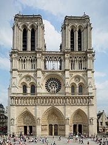
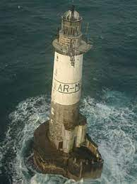

Sommaire
PrésentationHistoire de l'école
Les alentours: Saint Gonlay
Activitées organisées
Informations complémentaires
Présentation
Le Présentation (on parle également de patrimoine historique) recouvre les biens, matériels ou immatériels, ayant une importance artistique ou historique
Histoire de l'école
Le Histoire de l'école est l'ensemble des constructions humaines qui ont une grande valeur parce qu'elles caractérisent une époque, une civilisation ou un événement et que, à cause de cette valeur, nous voulons transmettre aux générations futures.
Les alentours: Saint Gonlay
Le patrimoine maritime est une notion relativement récente1, liée à l'émergence de patrimoines connexes comme le patrimoine industriel. On peut le définir ainsi : « Le patrimoine maritime comprend l’ensemble des éléments matériels ou immatériels liés aux activités humaines qui ont été développées dans le passé, récent ou plus lointain, en relation avec les ressources et le milieu maritimes.
Activitées organisées
Le Activitées organisées est l'ensemble des constructions humaines qui ont une grande valeur parce qu'elles caractérisent une époque, une civilisation ou un événement et que, à cause de cette valeur, nous voulons transmettre aux générations futures.
Informations complémentaires
Le patrimoine industriel comprend l'ensemble des témoignages matériels (paysages, sites de production tels usines, ateliers, moulins, documents, machines, outils, etc.) ... et immatériels (savoir-faire) des processus de production industrielle.